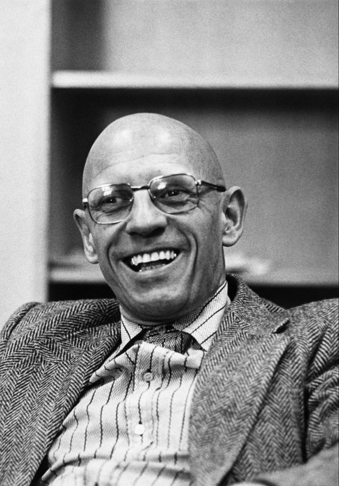

SVG RESOURCE
Foucault Visual Resource
A visual resource designed to help illustrate an important aspect of Michel Foucault's philosophical thought.
Open Full SizeA plain-English guide to Foucault's ideas on power, discourse, surveillance, the Panopticon, and biopower.
Michel Foucault (1926–1984) was a French philosopher and historian of ideas who argued that power and knowledge are intertwined: institutions like prisons, hospitals, and schools produce knowledge about people and use it to classify, discipline, and govern them. His best-known works are Discipline and Punish and The History of Sexuality.
Michel Foucault (1926–1984) was a French philosopher, historian of ideas, and social theorist who became one of the most influential thinkers of the twentieth century. His work transformed discussions about power, knowledge, institutions, sexuality, madness, punishment, identity, and the historical ways in which human beings come to understand both the world and themselves.
Michel Foucault's philosophy is difficult to place within a single traditional school or system. Although he was associated at different times with structuralism and post-structuralism, his work developed through distinctive historical investigations rather than a fixed philosophical doctrine. He studied how particular forms of knowledge emerge, change, and become accepted as authoritative within different periods of history.
A major concern of Foucault's work was the relationship between knowledge and the institutions that produce, organize, and apply it. He examined prisons, hospitals, psychiatric institutions, schools, administrative systems, and other structures of modern society. These institutions, he argued, do not merely respond to pre-existing human realities; they can also classify, regulate, and help shape them.
One of the central ideas in Foucault's philosophy is that knowledge and power are deeply connected. He challenged the simple belief that power belongs only to governments, rulers, or individuals who command others. Power also operates through observation, professional expertise, social norms, classification, discipline, and the ordinary practices through which people are measured, compared, judged, and understood.
Foucault remains important because his ideas continue to influence philosophy, sociology, history, political theory, psychology, cultural studies, gender studies, literary criticism, and the study of modern institutions. His concepts of discourse, power/knowledge, discipline, surveillance, biopower, governmentality, and subjectivity have provided powerful tools for examining how modern societies organize knowledge and exercise power over individuals and populations.
Michel Foucault is pronounced mee-SHEL foo-KOH, or in the International Phonetic Alphabet, [miʃɛl fuko]. The first name is closer to "mee-SHEL" than the English "Michael," and the surname "Foucault" ends on an open "oh" sound rather than a hard consonant, since French does not pronounce the final "l" or "t" in this word.
A common mistake among English speakers is pronouncing the surname as "foo-CAWLT," fully sounding the ending. In standard French pronunciation, both the "l" and the "t" at the end of "Foucault" are silent, so the name should end softly on "-KOH" rather than a hard stop.
Michel Foucault was born in Poitiers, France, on October 15, 1926. He grew up in a prosperous family with strong connections to medicine; his father was a surgeon, and medicine formed an important part of his family background. This environment did not determine his philosophy, but his later historical studies of medicine, psychiatry, hospitals, and the classification of illness gave these subjects particular importance within the development of his intellectual work.
Foucault entered the prestigious École Normale Supérieure in Paris in 1946, where he studied philosophy and developed interests extending into psychology and the history of scientific knowledge. He received the agrégation in philosophy in 1951 and subsequently worked in psychology. His early intellectual formation therefore moved across disciplinary boundaries and helped establish the broad historical perspective that would later characterize his major writings.
Several important intellectual traditions contributed to Foucault's development. The work of Georges Canguilhem was especially significant for his understanding of the history of science and the historical transformation of concepts. Friedrich Nietzsche later became crucial to Foucault's genealogical approach (see Foucault and Nietzsche below), while phenomenology, structuralism, and the wider intellectual environment of twentieth-century French philosophy also formed part of his intellectual context.
During the 1950s and 1960s, Foucault held academic positions in France and abroad while developing the historical studies that established his reputation. His early major works investigated madness, medicine, and the human sciences, asking how these fields had historically constituted particular objects of knowledge. Rather than writing a conventional history of scientific progress, Foucault examined the changing conditions under which certain statements could count as meaningful, true, or scientifically authoritative.
In 1970, Foucault became Professor of the History of Systems of Thought at the Collège de France, a position he held until his death in 1984. His public lecture courses became an important part of his intellectual legacy and documented the continuing development of his ideas, particularly his later work on governmentality. During these years, his research moved through questions of punishment, discipline, sexuality, government, and subjectivity, while his methods increasingly took a critical and genealogical form.
Michel Foucault is important because he transformed how scholars examine power, knowledge, institutions, and social norms. His work showed how historically specific systems of classification and expertise can shape what societies regard as true, normal, or acceptable. His ideas influenced philosophy, history, sociology, cultural studies, and critical theory.
Michel Foucault is important because he changed the way many scholars think about the relationship between ideas, knowledge, and society. Rather than treating knowledge as something that develops independently from historical circumstances, he investigated the conditions through which particular forms of knowledge become possible. His work asks why certain concepts, categories, and disciplines emerge at particular moments and why they later acquire authority.
His work also transformed the philosophical study of power. Traditional political theory often concentrates on sovereignty, laws, governments, and the authority of rulers. Foucault did not deny the importance of these forms of power, but argued that modern power also operates in more dispersed and everyday ways. Institutions and social practices can shape conduct through observation, examination, classification, training, normalization, and the production of knowledge.
Foucault was particularly interested in the institutions that organize and regulate modern life. Prisons, schools, hospitals, psychiatric institutions, military organizations, and administrative systems became central subjects in his work. By studying such institutions historically, he showed how techniques designed to manage individuals could simultaneously produce knowledge about them and influence how they behaved, understood themselves, and were judged by others.
Another reason for Foucault's importance is his challenge to the idea that modern concepts are simply natural discoveries about human beings. Categories such as madness, criminality, abnormality, and sexuality have histories, and Foucault examined how their meanings and social functions changed over time. This historical approach encouraged scholars to question categories that appear obvious in the present and to investigate the practices that made them seem natural.
His influence extends far beyond philosophy. Scholars in sociology, history, political science, anthropology, literary studies, gender studies, cultural studies, criminology, and other fields continue to use Foucault's ideas about power, discourse, and knowledge to study modern societies. Even where his conclusions remain debated, his methods have profoundly shaped how researchers investigate institutions, social norms, expertise, identity, and the historical production of truth.

Michel Foucault's theory of power differs significantly from the traditional idea that power is simply something one person possesses and another person lacks. For Foucault, power is primarily exercised within relationships and operates through a wide network of social practices. It should therefore not be understood only as direct political command, physical force, or the authority of governments, rulers, and laws — the kind of sovereign authority theorized by thinkers like Thomas Hobbes.
Foucault examined the many ordinary settings in which power organizes human conduct. A school evaluates students, a hospital records patients, a prison supervises prisoners, and an administrative system collects information about populations. These activities are not all identical to political oppression, but they demonstrate ways in which individuals can be observed, classified, compared, trained, and regulated through institutional practices.
An important feature of Foucault's analysis is that power is not purely negative or repressive. Power does not operate only by prohibiting actions, imposing punishments, or preventing people from doing what they want. It can also be productive: it produces forms of knowledge, categories of persons, institutional practices, standards of normality, and particular ways in which individuals understand themselves and their relationships with others.
Foucault therefore encouraged scholars to study power at the level of everyday practices rather than searching only for a single center from which all power supposedly flows. Families, workplaces, schools, hospitals, professional institutions, and other social settings can contain relations of power. These relations are historically changing and often involve techniques that appear ordinary, useful, educational, scientific, or administrative rather than openly coercive. This broader view of power runs through political philosophy more widely.
Another important aspect of Foucault's philosophy is that power generates possibilities for resistance. If power exists within social relationships rather than only in a single central authority, then resistance can also emerge within those relationships. Foucault did not describe society as a completely closed system in which individuals are merely passive victims; relations of power remain dynamic, and possibilities for challenge, refusal, modification, and resistance are always part of their complex operation.
The relationship between power and knowledge is one of Michel Foucault's most famous philosophical ideas. He challenged the assumption that knowledge develops in complete independence from social power and historical institutions. Instead, he investigated how particular systems organize research, establish expertise, classify information, and determine which forms of knowledge become accepted as authoritative within particular historical circumstances.
Foucault's concept of power/knowledge does not mean that all knowledge is false or that truth is merely an illusion invented by powerful people. His argument is more complex. He examined the concrete practices through which knowledge about human beings is produced and applied, asking how the production of truth can become connected with institutions that observe, classify, regulate, and intervene in individual and social life.
Medical, psychiatric, legal, educational, and administrative institutions provide important examples in Foucault's work. These institutions collect information about individuals and populations while simultaneously developing categories through which people can be described and understood. Records, examinations, reports, diagnoses, measurements, and classifications can therefore produce knowledge that also makes new forms of administration and intervention possible.
The connection between power and knowledge therefore concerns the production of social reality as well as the control of information. When institutions define categories such as normal and abnormal, healthy and unhealthy, or criminal and non-criminal, these distinctions can influence how individuals are treated. Such categories may also affect how people understand themselves, particularly when professional knowledge becomes an important authority in defining identity and behavior.
Foucault was also interested in what he described as historically organized regimes of truth. Different societies and fields establish procedures for determining who may speak with authority, what kinds of evidence are accepted, and how statements are tested and circulated. His philosophy therefore asks us to examine truth historically and institutionally without reducing every scientific or intellectual achievement to a simple conspiracy or claiming that the distinction between truth and falsehood no longer matters.
| Mode | Target | How it works | Example | Key text |
|---|---|---|---|---|
| Sovereign power | Lawbreakers | Visible, public punishment | Public execution | Discipline and Punish |
| Disciplinary power | Individual bodies | Observation, examination, normalization | School timetable, prison | Discipline and Punish |
| Biopower | Populations | Statistics, public health, management of life | Census, vaccination drives | The History of Sexuality, Vol. I; Collège de France lectures |
The Foucault–Chomsky debate was a famous intellectual discussion between Michel Foucault and Noam Chomsky held in Eindhoven, Netherlands, in 1971. The discussion, organized in connection with the Dutch television program International Philosophical Encounters, brought together two influential thinkers whose approaches to human nature, knowledge, politics, and justice differed significantly.
Chomsky defended a conception of human nature in which certain innate structures and capacities play an important role in explaining human language and behavior. He also argued that a conception of human nature could provide a basis for criticizing existing political institutions and imagining a more just society.
Foucault was more skeptical of attempts to establish a universal account of human nature as a foundation for political judgment. His historical investigations emphasized how concepts concerning human beings are produced within particular historical and institutional conditions. Rather than beginning with a fixed conception of human nature, Foucault examined how forms of knowledge, social practices, and relations of power change across historical periods.
The discussion also revealed different approaches to the relationship between intellectual work and political action. Chomsky emphasized principles of justice and the possibility of criticizing institutions according to broader moral standards, whereas Foucault emphasized the historical analysis of the systems through which societies establish knowledge, norms, and forms of social control.
| Theme | Chomsky | Foucault |
|---|---|---|
| Human nature | Emphasized innate human capacities | Emphasized historical formation and transformation |
| Knowledge | Connected to rational inquiry and human capacities | Examined through historical relations of power and knowledge |
| Justice | Defended broader principles for criticizing institutions | Questioned universal foundations for political judgment |
| Political analysis | Included normative criticism of existing institutions | Emphasized historical analysis of power and institutions |
Discourse is one of the most important concepts in Michel Foucault's philosophy. Foucault did not use the term simply to mean language, conversation, or a collection of written texts. A discourse involves a broader historical system of statements, concepts, rules, practices, and institutional relationships through which a particular subject becomes intelligible and available as an object of knowledge.
For example, the way a society discusses madness is connected with institutions, medical knowledge, legal practices, social attitudes, professional expertise, and systems of classification. A discourse therefore determines more than the words people happen to use. It helps organize the field within which certain questions can be asked, certain distinctions can be made, and particular statements can be treated as meaningful, reasonable, or scientifically authoritative.
Foucault studied how discourses change historically and emphasized that concepts which appear natural or obvious in one period may have been understood very differently in another. His historical research therefore examined the conditions that make particular forms of knowledge possible. Rather than assuming that intellectual history is simply the gradual accumulation of better ideas, he investigated major transformations in the organization of knowledge itself.
In his archaeological work, Foucault examined what he called discursive formations. He was interested in the rules and regularities that organize a field of knowledge beyond the conscious intentions of individual speakers or authors. This approach made it possible to ask why certain concepts become available at a particular moment and why some statements are treated as legitimate while others become impossible, marginal, or unintelligible.
The concept of discourse became highly influential because it provided scholars with a way to study the connection between language, knowledge, institutions, and power. It remains important in cultural studies, literary criticism, political theory, media studies, history, and the social sciences. Foucault's use of the concept encourages researchers to examine not only what is said about a subject, but also the historical practices and institutions that make certain forms of speech possible and authoritative.
Michel Foucault's archaeology of knowledge was a historical method for analyzing the rules, concepts, and conditions that make particular forms of knowledge possible in different periods. Rather than seeking a single origin or continuous development of ideas, archaeology examines how systems of discourse are structured and how statements become accepted as meaningful knowledge.
During an important period of his career, Foucault described his historical method as archaeology. Archaeology does not mean digging into the past in a literal sense or simply uncovering forgotten historical facts. It refers to an attempt to investigate the underlying rules and conditions that organize systems of knowledge during particular historical periods and determine what kinds of statements can meaningfully belong to a particular field.
Rather than writing a simple history in which ideas gradually improve through the continuous progress of reason, Foucault examined discontinuities and transformations. He asked how an entire field of knowledge could change and how new ways of thinking could replace earlier systems. Archaeology therefore directs attention toward breaks and shifts in intellectual history rather than assuming that every period develops smoothly from what came before.
Foucault's archaeological studies examined areas including madness, clinical medicine, language, and the human sciences. He was interested in the historical conditions that determine what kinds of statements can be treated as meaningful, scientific, reasonable, or true. The central question was not simply whether individual thinkers held correct beliefs, but how an entire field established the conceptual boundaries within which particular forms of knowledge became possible.
Archaeology was especially concerned with systems of thought that Foucault described through concepts such as discursive formations and epistemes. These concepts helped him investigate the historical rules governing knowledge without reducing those rules to the intentions or consciousness of individual authors. His method therefore challenged traditional intellectual histories that explained major changes mainly through the ideas and achievements of a small number of exceptional thinkers.
His book The Archaeology of Knowledge, published in 1969, provided his most explicit methodological discussion of this approach. Archaeology became one of Foucault's major contributions to the philosophy and history of knowledge, although his later work increasingly emphasized genealogy, practices, and relations of power. The transition was not a complete rejection of his earlier work, but reflected his growing concern with explaining how systems of thought emerge and change through concrete historical processes.
Foucault later developed an approach known as genealogy, strongly influenced by Friedrich Nietzsche's genealogical investigations. Genealogy examines the historical development of practices, institutions, and systems of thought without assuming that history follows a simple, rational, or inevitable path toward progress. It emphasizes contingency and asks how present realities emerged from complex historical processes rather than from a predetermined plan.
A genealogical investigation looks for struggles, accidents, institutions, conflicts, practical techniques, and changing social conditions that contributed to the emergence of a particular practice or concept. Instead of asking only what something means today, genealogy asks how it came to exist in its present form. This approach challenges explanations that treat contemporary institutions or moral categories as natural, timeless, or historically inevitable.
Genealogy also brought the body and concrete practices into Foucault's historical analysis. Rather than concentrating only on abstract ideas, genealogical studies investigate how bodies are trained, organized, observed, punished, measured, and made useful within particular institutions. Foucault was interested in the historical techniques through which human beings become objects of knowledge and subjects of discipline, regulation, and other forms of power.
Discipline and Punish is one of the clearest examples of Foucault's genealogical approach. The book investigates the historical transformation of punishment and examines the development of modern disciplinary institutions. Foucault argues that the emergence of apparently more humane forms of punishment also involved new techniques of observation, correction, examination, and control that could extend far beyond the prison itself.
Foucault's genealogy became influential because it challenged traditional historical narratives that explain the present as the necessary result of continuous progress. It encouraged scholars to examine the contingent origins and hidden assumptions behind institutions and concepts that appear permanent or inevitable in modern society. Genealogy thus became a form of historical critique capable of making the familiar appear historically constructed and therefore open to critical questioning and possible transformation.
Madness was one of Michel Foucault's earliest major subjects of research. In his major early study, originally published in French as History of Madness in 1961 and later known to many English- speaking readers through Madness and Civilization, he investigated the changing historical relationship between European societies and people classified as mad or mentally ill. The work became one of the foundations of his broader historical critique.
Foucault challenged the conventional assumption that the modern understanding of mental illness simply replaced ignorance and superstition with objective scientific truth. Instead, he examined how institutions and social practices changed the position of people considered mentally abnormal. His argument drew attention to the historical processes through which madness was separated, classified, confined, and increasingly connected with specialized forms of medical and psychiatric knowledge.
A central theme of Foucault's analysis was the historical importance of confinement. He investigated the changing institutions through which people considered socially or mentally abnormal were excluded from ordinary social life. This historical development interested him not merely as a story about changing medical theories, but as an example of the close relationship between social practices, institutions, and the production of knowledge about human beings.
Foucault's work also raised difficult questions about the relationship between psychiatric knowledge and authority. When a person is defined through a medical or psychiatric category, that definition may have practical consequences for treatment, confinement, legal status, and social identity. Foucault therefore examined how systems that claim to know the truth about mental illness can also participate in determining how particular individuals are governed and understood.
Foucault's work on madness became controversial and generated major scholarly debates concerning its historical interpretations and use of evidence. Nevertheless, it played an important role in the development of critical approaches to psychiatry, medicine, social institutions, and the historical construction of normality. Its lasting importance lies partly in its insistence that modern concepts of mental illness should themselves be examined historically rather than treated as entirely independent of social and institutional contexts.
A recurring question in Foucault's philosophy concerns the distinction between what a society considers normal and what it considers abnormal. These categories can appear natural and self-evident, but Foucault investigated the historical processes through which standards of normality are created, measured, and applied. His work therefore asks how particular forms of human behavior become accepted as standards against which other individuals are judged.
Modern institutions frequently compare individuals with established norms. Students are tested, patients are examined, workers are evaluated, soldiers are trained, and populations are measured through statistical and administrative systems. These processes create standards against which people can be compared. Individuals may then be identified as successful or unsuccessful, healthy or unhealthy, efficient or inefficient, normal or abnormal.
Foucault argued that normalization can become an important form of social power. Unlike a purely legal system that asks whether a specific action is permitted or forbidden, normalizing practices also measure individuals according to standards of expected conduct and performance. Attention is therefore directed not only toward wrongdoing, but toward deviations from a desired average, model, level of ability, or institutional standard.
These processes can encourage individuals to regulate themselves. People may modify their behavior because they are aware of expectations concerning health, productivity, sexuality, education, appearance, conduct, and other aspects of social life. Foucault's analysis is important because it shows that social control does not always require continuous physical force. Observation, measurement, comparison, and self-correction can become powerful mechanisms within modern institutions and everyday social relationships.
His analysis does not suggest that all standards are automatically illegitimate or that every distinction between healthy and unhealthy behavior should simply be abandoned. Instead, Foucault encourages critical examination of the historical and institutional processes through which norms are established and used to classify human beings. The philosophical question is how particular standards acquire authority, what consequences they produce, and whose interests or forms of knowledge may be involved in defining the boundaries of normality.
Quick answer: Discipline and Punish (1975) is Michel Foucault's genealogical study of how modern punishment shifted from public physical torture to discreet disciplinary institutions such as the prison. Its central argument is that modern power operates less through visible force and more through constant observation, examination, and normalization — a shift Foucault illustrates through Jeremy Bentham's Panopticon.
Discipline and Punish is one of Michel Foucault's most famous and influential books. Originally published in French in 1975, it examines the historical transformation of punishment and the emergence of modern systems of discipline. The book combines historical research with philosophical analysis to investigate how changing methods of punishment were connected with broader transformations in the organization and control of human behavior.
Foucault begins with a striking contrast between older forms of public punishment and modern systems such as imprisonment. He does not argue simply that punishment became either more brutal or more humane. Instead, he examines how new forms of penal reform introduced different techniques of power. Modern punishment increasingly sought to observe, classify, correct, and transform individuals rather than merely inflict visible suffering upon the body.
The modern prison became important in Foucault's analysis because it represented a broader system of disciplinary power. Techniques of observation, examination, training, measurement, documentation, and correction could also appear in schools, hospitals, military institutions, factories, and other organized settings. Foucault's argument was therefore not that these institutions were literally the same as prisons, but that related techniques of discipline could operate across different areas of modern society.
At the center of this analysis are practices such as hierarchical observation, normalizing judgment, and examination. Through these techniques, individuals become visible and comparable within systems of knowledge. Records can be created, performance can be measured, and deviations from institutional standards can be identified. Discipline therefore connects the exercise of power with the production of knowledge about the people who are subjected to its procedures.
Discipline and Punish consequently extends far beyond the history of prisons. It presents a broader philosophical investigation into how modern societies organize bodies, behavior, time, movement, knowledge, and individual identity through systems of discipline. The book became enormously influential because it challenged the belief that modern power is exercised primarily through laws and direct coercion, revealing the importance of detailed and often routine techniques for shaping human conduct.
Jacques Derrida offered an influential early critique of Michel Foucault's Madness and Civilization in his 1963 lecture Cogito and the History of Madness. Derrida questioned Foucault's interpretation of the relationship between madness and reason in the work of René Descartes, particularly Foucault's reading of the First Meditation.
Foucault had argued that the history of Western reason involved a significant separation between reason and madness and interpreted Descartes as an important moment in this history. Derrida challenged aspects of this interpretation, arguing that Foucault's reading of Descartes did not adequately account for the philosophical function of doubt in the First Meditation.
The disagreement was significant because it concerned not only the interpretation of Descartes but also the methodological foundations of Foucault's project. Derrida questioned whether a historical account of madness could completely place itself outside the philosophical language and conceptual structures through which madness and reason had traditionally been discussed.
The exchange between Foucault and Derrida later became an important episode in twentieth-century French philosophy. Their disagreement illustrates a broader methodological question: whether the history of reason and madness can be written from a position entirely outside the philosophical traditions whose assumptions are being investigated.
The concept of docile bodies is central to Michel Foucault's analysis of disciplinary power. In Discipline and Punish, Foucault describes how modern institutions develop techniques for training, organizing, observing, and regulating individual bodies. A body becomes "docile" when it can be subjected to discipline, made more useful, and trained to conform to established procedures and expectations.
Foucault's argument is not simply that institutions physically force people to obey. Disciplinary power operates through detailed organization of time, space, movement, repetition, examination, and surveillance. Schools, military institutions, factories, hospitals, and prisons can establish routines through which individuals gradually learn how they are expected to sit, stand, move, work, behave, and perform.
The idea of the docile body therefore connects physical behavior with institutional knowledge. Individuals are observed and evaluated through examinations, records, measurements, and classifications, while the resulting knowledge can be used to further organize and regulate their conduct. Discipline consequently works through both the body and the production of information about the individual.
Foucault's concept can also be applied to contemporary situations in which people monitor and regulate themselves according to established standards. School schedules, workplace performance measurements, fitness targets, and other systems of continuous evaluation can be examined through the Foucauldian question of how individuals come to regulate their own conduct.
The French term dispositif, often translated as "apparatus", refers to the heterogeneous network of practices, institutions, laws, regulations, forms of knowledge, architectural arrangements, and discourses through which relations of power operate. Foucault developed the concept particularly in his work of the 1970s to describe how power is not exercised through a single institution or rule but through relationships among many different elements.
A dispositif can therefore include both what is explicitly said and what remains implicit. A prison, for example, is not simply a physical building. It is connected to legal rules, administrative procedures, architectural arrangements, surveillance practices, criminological knowledge, professional institutions, and ideas about punishment and rehabilitation. Together these elements form a network through which particular forms of conduct become possible, expected, or regulated.
Foucault emphasized that a dispositif has a strategic function. It emerges within particular historical circumstances and can change as relationships among institutions, forms of knowledge, and techniques of power change. The concept therefore helps explain why power should not be understood merely as something possessed by a ruler or institution. Power can operate through networks of practices that organize how people are observed, classified, governed, and understood.
The concept of the dispositif is closely connected to power/knowledge. Institutions can produce knowledge about individuals and populations, while that knowledge can simultaneously make new forms of intervention possible. The dispositif provides a way of studying this relationship as a historically specific arrangement of discourse, institutions, practices, and material structures.
A dispositif is a historically specific network of institutions, practices, rules, spaces, forms of knowledge, and discourses through which power operates and particular forms of conduct are organized.
The carceral archipelago is Foucault's term for the network of institutions and disciplinary mechanisms through which punishment and surveillance extend beyond the prison itself. The concept appears in Discipline and Punish (1975), where Foucault examines the transformation of modern punishment and the expansion of disciplinary techniques throughout society.
The word "archipelago" provides the central metaphor: instead of imagining the prison as an isolated institution, Foucault describes a wider network of connected disciplinary sites. Prisons, reformatories, schools, hospitals, factories, military institutions, probation systems, and other organizations can participate in practices of observation, examination, classification, training, and correction.
The carceral does not therefore refer only to physical imprisonment. Disciplinary techniques can extend into ordinary social institutions, creating a continuum between confinement, supervision, correction, and normalization. Individuals may be evaluated through examinations, records, reports, classifications, and behavioral assessments without necessarily being imprisoned.
This concept is closely related to Foucault's analysis of panopticism. The Panopticon provides a model of surveillance in which the possibility of observation encourages individuals to regulate their own conduct. The carceral archipelago describes the broader diffusion of related disciplinary mechanisms across institutions and social spaces.
Foucault's carceral archipelago describes the wider network through which disciplinary and corrective practices extend beyond prisons into institutions and social practices concerned with observation, examination, classification, training, and normalization.
Heterotopia is Foucault's concept of "other spaces": real places that exist within society but function in distinctive relationships to the other spaces around them. Foucault developed the idea in his discussion of Des espaces autres ("Of Other Spaces"), originally presented as a lecture in 1967 and published much later. Unlike utopias, which are imagined or unreal spaces, heterotopias are actual locations that can represent, mirror, contest, or rearrange relationships found elsewhere in society.
Foucault proposed that heterotopias exist in many different cultures, although their forms vary historically. Examples he discussed include cemeteries, psychiatric institutions, prisons, museums, libraries, theatres, gardens, and ships. These spaces can bring together different meanings, social positions, or relationships that would normally remain separated.
Foucault identified several principles for analyzing heterotopias. Some are associated with crisis, while others are associated with deviation, in which people whose behavior is judged to depart from a social norm are placed. Other heterotopias juxtapose several spaces within one location, accumulate different periods of time, or operate through particular systems of opening, closing, entry, and exclusion.
The concept is therefore not simply another word for an unusual place. Foucault's heterotopia concerns the relationship between a real space and the wider social order. A museum, for example, can gather objects from different historical periods into a single physical location, while a cemetery can create a distinct space whose relationship to the living population changes according to cultural and historical arrangements.
A utopia is an imagined or unreal place, whereas a heterotopia is a real place that functions as an "other space" in relation to the surrounding social order.
The Foucault boomerang, also called the colonial boomerang or imperial boomerang, describes the process by which techniques of power developed in colonial contexts can return to the imperial center and influence domestic forms of governance, policing, surveillance, or population control. Foucault discussed this process in his 1976 lectures published as Society Must Be Defended.
Foucault argued that colonization did not involve only the one-way exportation of European political and legal models to other territories. Colonial encounters could also become sites where techniques and institutions of power were developed, tested, or adapted. These techniques could subsequently influence the organization of power within European societies themselves.
The term should not be attributed exclusively to Foucault. The broader idea of a colonial or imperial "boomerang" has important earlier formulations in the work of Aimé Césaire and Hannah Arendt. Foucault's contribution was to describe how colonial models could have a "boomerang effect" on mechanisms, institutions, and techniques of power in the West.
The concept therefore challenges a simple division between "colonial" and "domestic" histories of power. It encourages historians and social theorists to examine how techniques of surveillance, policing, administration, confinement, and population management can circulate between different geographical and political settings.
The Foucault boomerang describes the return or circulation of techniques of colonial power back into the societies that developed and deployed them, contributing to new forms of domestic governance and social control.
Limit-experience refers to an experience that pushes a person toward the boundaries of established forms of identity, knowledge, or ordinary experience. The concept has important roots in the work of Georges Bataille and was also associated with Maurice Blanchot before becoming significant in Foucault's own philosophical development. Foucault was interested in experiences capable of disrupting familiar ways of understanding oneself and the world.
In this context, a limit-experience is not simply an unusually intense experience. It concerns an encounter in which established categories or assumptions can become unstable. Experiences involving madness, sexuality, transgression, extreme forms of literature, or confrontation with death could raise questions about the boundaries through which modern subjects understand themselves.
The idea is connected to Foucault's interest in the possibility of transformation. Rather than assuming that the subject possesses a fixed and universal identity, limit-experiences can reveal how identities and forms of knowledge are historically organized. An experience that brings someone to the limits of an established way of thinking can therefore create the possibility of thinking or becoming otherwise.
Limit-experience also helps explain an important dimension of Foucault's early philosophical interests that differs from his later analyses of institutions and disciplinary power. His work was influenced by writers and thinkers concerned with transgression, literature, madness, and the disruption of conventional subjectivity. The concept therefore provides a bridge between Foucault's historical investigations and his interest in experiences that challenge established forms of selfhood.
A limit-experience is an experience that brings a person toward the boundaries of ordinary identity, knowledge, or subjectivity and can disrupt established ways of understanding oneself.
Critical ontology, particularly Foucault's idea of a "critical ontology of ourselves," describes an approach to philosophy that examines how we have historically become the kinds of subjects we are. Rather than searching for an unchanging human essence, Foucault asks how historically specific practices, institutions, forms of knowledge, and relations of power have shaped the ways people understand themselves.
This approach is closely associated with Foucault's later interpretation of Enlightenment, particularly his 1984 essay What Is Enlightenment?. Foucault connects critique with the examination of what appears natural, necessary, or universal. Historical analysis can reveal that some features of contemporary society are the products of particular historical processes rather than inevitable features of human existence.
A critical ontology of ourselves therefore asks questions such as: How did we become who we are? Which practices have shaped our identities? Which forms of knowledge define what counts as normal? Which limits are historically produced rather than absolutely necessary? The purpose is not simply to describe the past but to identify points at which established ways of thinking and acting might be questioned.
Foucault's critical ontology is consequently different from a traditional ontology that seeks to establish the timeless structure of being. It is a historically oriented practice of critique directed toward ourselves and our present. It asks how the present has been constructed and where possibilities for transformation may exist within those historical conditions.
Foucault's critical ontology of ourselves is the historical and philosophical examination of how our identities, practices, forms of knowledge, and limits have been produced, with the aim of identifying what might be questioned or transformed.
Disciplinary power is a major concept in Foucault's analysis of modern society. Unlike the dramatic power of a sovereign who publicly commands, prohibits, or punishes, disciplinary power often operates continuously through routines, observation, training, examination, and correction. It works through detailed practices that organize individuals within institutions and attempt to shape conduct according to particular standards of efficiency, obedience, and normality.
Discipline organizes bodies in both space and time. Schools arrange students into classrooms and schedules, military institutions train soldiers through carefully structured exercises, factories organize work through routines, and prisons supervise prisoners within regulated environments. Foucault was interested in how these arrangements divide activities into smaller units, establish timetables, coordinate movements, and make individual behavior more visible and manageable.
The examination plays a particularly important role in disciplinary power. Through tests, records, reports, medical examinations, and evaluations, individuals become objects of knowledge. Institutions can compare people, measure performance, identify deviations, and maintain detailed information over time. The examination therefore combines observation with judgment, making it a particularly clear example of the connection between power and knowledge in Foucault's philosophy.
Another important feature of disciplinary power is normalizing judgment. Individuals are not merely punished for breaking explicit laws; they may also be measured against standards that define what counts as proper, efficient, healthy, or acceptable. Those who fall outside these norms can become targets for correction or intervention. Discipline therefore encourages conformity through continuous comparison with institutional expectations.
Foucault's theory of discipline became highly influential because it showed that modern power does not always depend on spectacular displays of force. Individuals may become subjects of power through ordinary institutional practices that appear routine, educational, scientific, therapeutic, or administrative. His analysis does not mean that every school, hospital, or workplace functions in exactly the same way, but it provides a method for examining how techniques of observation, evaluation, and correction can shape modern social life.
Michel Foucault used the Panopticon as a model for explaining how modern disciplinary power can operate through visibility, surveillance, and self-regulation. Drawing on Jeremy Bentham's 1791 prison design, Foucault argued that the possibility of being watched can lead individuals to monitor and regulate their own behavior, even when no authority is visibly intervening.
The Panopticon is one of the best-known concepts associated with Michel Foucault, but the original idea was not Foucault's invention. The Panopticon was a prison and institutional design proposed by the English philosopher and reformer Jeremy Bentham in 1791. Bentham's design placed a central observation point within a circular structure surrounded by individual cells. From the central position, an observer could potentially see the occupants of the surrounding cells, while those being observed could not reliably determine when they were actually being watched.
Almost two centuries later, Foucault made the Panopticon central to his analysis of modern disciplinary power in Discipline and Punish (1975). For Foucault, Bentham's architectural model provided a way of understanding a broader mechanism of power based on visibility, observation, and the possibility of surveillance. The important point is not that every modern institution literally reproduces Bentham's circular prison. Instead, the Panopticon illustrates how the possibility of being observed can influence behavior even when direct supervision is not continuously taking place.
This possibility of observation can lead individuals to regulate their own conduct. When people cannot know with certainty whether they are being watched, they may behave as though observation is possible. Surveillance can therefore become partly internalized: instead of relying entirely on physical force or constant intervention, disciplinary power can encourage individuals to monitor and correct themselves. Foucault used this mechanism to show how power can operate through the organization of visibility rather than simply through explicit commands or punishment.
The Panopticon is therefore connected to several other techniques of discipline that Foucault examines, including observation, examination, documentation, classification, comparison, and normalization. Schools, hospitals, factories, military institutions, and prisons can organize individuals through schedules, examinations, records, rankings, reports, and established norms. Surveillance becomes particularly significant when observation is combined with systems of knowledge that identify, compare, classify, and evaluate individuals.
Foucault's Panopticon should therefore be understood as more than a theory of surveillance or a description of a particular prison. It represents a model of disciplinary power in which visibility can help organize conduct and individuals can participate in their own regulation. The concept has subsequently been applied in discussions of CCTV, workplace monitoring, digital surveillance, algorithmic tracking, data collection, and other forms of contemporary observation. These are modern applications of Foucault's framework, rather than institutions that Foucault himself necessarily analyzed.
One of Michel Foucault's most famous and controversial arguments appears near the end of The Order of Things (1966), where he discusses the possible "death of man." Foucault was not predicting the literal disappearance or extinction of human beings. Instead, he was questioning the historical status of "man" as a modern philosophical and epistemological concept. His argument is that the modern idea of the human being as both the subject who knows and the object to be studied emerged under particular historical conditions rather than existing as an eternal foundation of knowledge.
Foucault's analysis begins from the different ways knowledge was organized during the Renaissance, the Classical period, and modernity. In the modern episteme, human beings became objects of systematic study in fields such as biology, economics, and linguistics, while simultaneously being treated as subjects capable of producing knowledge about themselves. This double position made "man" a distinctive figure within modern thought.
The phrase "death of man" therefore refers to the possible disappearance of this particular historical configuration. Foucault argues that if the conditions that produced the modern conception of "man" were to change, the concept itself could also be transformed. The claim is closely connected to his broader method of showing that apparently universal categories can have specific historical origins.
Foucault famously concludes The Order of Things with an image of a face drawn in the sand at the edge of the sea, suggesting that the modern figure of "man" may be erased as changing forms of knowledge reorganize the intellectual landscape. The image emphasizes the historical contingency of the concept rather than making a prediction about the physical future of humanity.
In Foucault's philosophy, the "death of man" means the possible disappearance of man as a particular modern form of knowledge. It is a philosophical and historical claim about the status of the human subject, not a prediction that human beings will literally cease to exist.
In his influential essay and lecture What Is an Author? (1969), Michel Foucault questioned the assumption that the author is simply the individual person who creates a text. He asked instead how the category of the author functions within systems of discourse and why certain texts are attributed to particular individuals. His analysis shifts attention from the author's personal identity and intentions toward the historical and institutional functions that authorship performs.
Foucault introduced the concept of the author-function to describe the ways in which the name of an author can classify, organize, and regulate a body of discourse. An author's name can affect how a text is interpreted, which works are grouped together, how a text is valued, and what kinds of authority or responsibility are associated with it. In this sense, the author is not merely a source of writing but also a function within a particular cultural and institutional system.
Foucault also argued that the role and significance of authorship have changed historically. Not every form of discourse has always required an identifiable author in the same way. The importance attached to authorship is therefore itself a historical phenomenon. Questions of ownership, responsibility, authenticity, classification, censorship, and authority can all contribute to the way a society assigns texts to authors.
What Is an Author? is often discussed alongside Roland Barthes's earlier essay The Death of the Author. Both thinkers challenged traditional assumptions about the author's authority, but Foucault's analysis is particularly concerned with the historical conditions under which the author operates as a function of discourse. Rather than simply asking who wrote a text, Foucault asks what the category of "author" does within a system of knowledge and discourse.
| Concept | Meaning |
|---|---|
| Author | The individual traditionally identified as the writer or creator of a work. |
| Author-function | The cultural and institutional function through which an author's name organizes, classifies, and regulates discourse. |
| Authorship | A historically variable system involving attribution, authority, responsibility, ownership, and classification. |
| Foucault's central question | How and why does the category of the author function within particular systems of discourse? |
In his 1984 essay What Is Enlightenment?, Michel Foucault returned to Immanuel Kant's famous 1784 essay of the same name. Rather than treating the Enlightenment simply as a historical period, Foucault examined it as a particular attitude toward the present. His interpretation asks how people can critically examine the historical conditions, assumptions, and limits that shape their own ways of thinking and acting.
Kant had described Enlightenment in terms of humanity's emergence from self-imposed immaturity through the courage to use reason. Foucault approached Kant's question differently. He emphasized the continuing importance of asking what is happening in the present and examining the historical processes through which contemporary forms of thought, institutions, and practices have been produced.
Foucault therefore connected Enlightenment with critique. Critique involves investigating what appears natural, necessary, or self-evident and asking how it came to take its present form. This does not mean rejecting everything that exists. Instead, historical inquiry can reveal that some limits and arrangements are contingent and therefore potentially open to transformation.
This approach led Foucault to describe his project as a "critical ontology of ourselves." The phrase refers to examining how we have become the kinds of subjects we are through historically specific practices, institutions, forms of knowledge, and relations of power. His interpretation of Enlightenment thus connects historical inquiry with an ongoing practice of questioning the limits imposed upon the present.
For Foucault, Enlightenment can be understood not only as an eighteenth- century historical movement but also as a continuing critical attitude toward the present: examining how historically produced limits shape us and investigating where those limits might be transformed.
| Theme | Kant | Foucault |
|---|---|---|
| Central question | What does it mean for humanity to emerge from immaturity? | How should we critically examine our present historical condition? |
| Reason | Emphasis on the public use of reason. | Emphasis on critical examination of historically formed limits. |
| Enlightenment | A process of intellectual emancipation. | An attitude toward the present and a practice of critique. |
| Historical perspective | Enlightenment understood in relation to humanity's intellectual maturity. | Modernity examined through the historical formation of practices, institutions, and forms of subjectivity. |
Michel Foucault's work became highly influential in discussions about surveillance. He examined how observation can become a technique of social power when institutions supervise behavior, collect information, maintain records, and compare individuals with established standards. Surveillance, in this sense, is not simply the act of watching someone; it can form part of wider systems for making individuals visible, knowable, and subject to evaluation.
Surveillance is important because it can connect knowledge and power. To observe an individual is often to produce information about that person through reports, records, examinations, measurements, or other forms of documentation. This information can then be used for classification, evaluation, treatment, administration, education, or correction. Observation therefore becomes more than passive watching: it can contribute to the practical management of human conduct.
Foucault's discussion of the Panopticon illustrates one important principle of surveillance. Individuals may alter their behavior when they know they can potentially be observed, even if they are not being watched at every moment. The possibility of observation can therefore encourage self-regulation and reduce the need for constant direct intervention. Foucault connected this principle with broader systems of discipline rather than treating surveillance as an isolated act.
Foucault did not write specifically about many modern digital technologies that exist today. Nevertheless, his concepts have been widely applied to contemporary questions about online monitoring, databases, algorithmic systems, social media, workplace surveillance, and government data collection. Such applications should not simply assume that every digital technology is a Panopticon, but they can use Foucault's ideas to investigate how information and observation shape modern relations between individuals and institutions.
His work encourages an important philosophical question: how does the possibility of being observed influence human behavior? This question remains central to debates about privacy, freedom, technology, and the relationship between individuals and institutions. Foucault's analysis is especially valuable because it directs attention toward the systems that organize observation and knowledge, rather than viewing social control only as the result of direct force or explicit prohibition.
Biopower is one of Michel Foucault's most influential concepts. It refers broadly to modern forms of power concerned with life, bodies, health, populations, reproduction, mortality, and the biological conditions of human existence. Foucault used the concept to describe an important historical transformation in which political and administrative power increasingly took the life of human populations as an object of knowledge, regulation, and intervention.
Foucault distinguished this development from older models of sovereign power that focused strongly on the authority to command, punish, and ultimately take life. He argued that, from the modern period onward, these older forms of power were increasingly supplemented by techniques concerned with administering, protecting, improving, and regulating life. Power therefore became concerned not only with obedience to a sovereign but also with the conditions affecting entire populations.
Biopower operates at more than one level. One dimension concerns the disciplining and management of individual bodies through institutions and practices such as medicine, education, training, and normalization. Another concerns populations as collective biological realities that can be studied through statistics, demographics, public health, and other forms of administrative knowledge. These dimensions connect the management of individual bodies with the regulation of collective life.
Public health, demographic information, medical administration, population statistics, sanitation, insurance, and policies concerning life and health can all become part of the field in which biopower operates. Human life itself becomes an important object of political knowledge and administrative management. Foucault's point was not that every attempt to improve health is automatically oppressive, but that the governance of life creates important new relationships between knowledge, expertise, institutions, and political power.
The concept of biopower has become central to contemporary political philosophy and social theory. It has been used to study public health, state policy, population management, medicine, reproduction, security, and the political regulation of bodies. Foucault's analysis remains important because it shows how modern power can operate by attempting to foster and manage life rather than functioning primarily through visible punishment, prohibition, or the threat of death.
Biopolitics is closely connected with Foucault's concept of biopower. The term concerns political strategies, forms of knowledge, and administrative practices directed toward populations and the management of collective biological life. Biopolitics therefore examines how governments and other institutions become concerned with the conditions affecting the health, security, productivity, and well-being of large groups of people.
Modern governments require extensive knowledge about populations. Birth rates, death rates, disease, health, employment, housing, and other forms of statistical information can become important for political and administrative decision-making. Population thus becomes not merely a collection of separate individuals but an object that can be measured, analyzed, compared, and governed through specialized forms of expertise and knowledge.
Foucault's analysis showed that political power is not concerned only with laws, sovereignty, and territory. Modern states and institutions can also exercise power by attempting to regulate conditions affecting the life and well-being of entire populations. Policies concerning health, urban environments, security, welfare, and economic activity may all involve attempts to understand and influence collective processes that affect the life of a population.
Biopolitics also reveals the close relationship between political power and scientific or administrative expertise. Decisions about populations often depend upon statistics, medicine, economics, and other specialized forms of knowledge. Foucault was interested in how these forms of expertise make particular kinds of intervention possible while also establishing new ways of defining social problems, risks, norms, and desirable forms of collective life.
Biopolitics remains one of the most widely discussed areas of Foucault's later thought. Contemporary philosophers and political theorists continue to debate how his ideas can help explain the relationship between states, populations, health, security, and biological life. The continuing importance of the concept lies in its ability to connect political institutions with the everyday conditions through which human life is measured, managed, protected, and regulated.
Governmentality is another important concept developed in Michel Foucault's later work, especially in his Collège de France lectures. The term connects the study of government with the rationalities and techniques through which conduct is directed. For Foucault, governmentality provides a way of examining not simply who rules, but how governing is made possible through particular forms of knowledge, calculation, expertise, and practical intervention.
For Foucault, government does not refer only to the actions of a state. In a broader sense, it concerns attempts to guide or conduct the conduct of individuals and groups. Government can therefore include the management of families, institutions, communities, and populations, as well as practices through which individuals govern themselves. Governmentality thus expands the philosophical study of power beyond traditional questions about sovereignty and political law.
Modern forms of government often depend on statistics, economics, administration, scientific knowledge, and specialized expertise. Rather than governing only through direct commands, institutions can attempt to shape the environment within which individuals make choices and conduct their lives. This may involve establishing incentives, managing risks, defining problems, organizing services, or creating conditions intended to influence the behavior of populations.
Foucault's study of governmentality also allowed him to investigate liberal and neoliberal forms of government in new ways. He examined them not merely as collections of political ideas but as particular rationalities of governing that depend upon specific assumptions about markets, individuals, freedom, and social order. This approach made it possible to study how forms of government can encourage individuals to regulate themselves rather than relying exclusively upon direct command.
Governmentality became highly influential in political theory because it provides a framework for studying modern administration, liberalism, neoliberalism, security, public policy, and practices of self-government. It does not replace Foucault's earlier analysis of discipline and power, but extends his investigation toward broader political strategies and rationalities. The concept remains central to attempts to understand how modern societies govern populations while simultaneously shaping the freedom and conduct of individuals.
Michel Foucault's work on sexuality challenged the common belief that modern society simply moved from sexual repression toward increasing freedom. In The History of Sexuality, he examined how modern Western societies produced extensive knowledge and discussion about sex. His central question was not simply whether societies permit or forbid sexual behavior, but how sexuality became an important object of scientific, medical, legal, moral, and personal investigation.
Foucault questioned what he called the repressive hypothesis. He argued that modern society did not merely silence sexuality; it also generated new forms of discourse, scientific investigation, classification, confession, and institutional knowledge concerning sexual behavior. The modern period witnessed an increasing multiplication of ways of speaking about sex, often through institutions that claimed authority to discover truths about individuals and their desires.
Sexuality became connected with medicine, psychiatry, education, law, morality, and scientific classification. Through these systems, particular behaviors, desires, and identities could be analyzed and categorized in increasingly detailed ways. Foucault was especially interested in how individuals came to be understood through supposedly revealing truths about their sexuality and how sexual knowledge became connected with broader processes of normalization and social regulation.
His later volumes of The History of Sexuality shifted attention toward ancient Greek and Roman ethical practices. Foucault investigated how individuals historically formed ethical relationships with pleasure, desire, conduct, and themselves. This development showed that his interest in sexuality was not limited to repression or social control; it was also connected with broader questions concerning ethics, subjectivity, self-formation, and the historical creation of particular relationships between individuals and truth.
Foucault's philosophy of sexuality became enormously influential in gender studies and queer theory, shaping the work of later thinkers such as Judith Butler. His work encouraged scholars to study sexuality not simply as a fixed biological reality but also as something shaped by historical discourse, institutions, social practices, and systems of knowledge. His arguments remain debated, but they profoundly changed discussions about sexual identity by directing attention toward the historical conditions through which particular categories and forms of self-understanding become possible.
A major question in Foucault's philosophy concerns how human beings become subjects. Traditional philosophy often begins with an individual subject who already possesses a stable identity and then asks how that individual gains knowledge or exercises freedom. Foucault approached the problem differently by investigating the historical and social processes through which people come to understand themselves and others in particular ways.
Institutions and systems of knowledge can classify people according to categories such as healthy, sick, normal, abnormal, criminal, or particular sexual identities. These classifications do not simply describe individuals from the outside; they can also influence personal identity and self-understanding. When categories become socially and institutionally authoritative, individuals may encounter themselves through concepts that shape how they interpret their experiences.
Foucault was therefore interested in processes of subjectification. Human beings become subjects through complex relationships involving knowledge, power, social norms, and practices directed toward the self. Individuals may be made into objects of knowledge by institutions, but they also participate in practices through which they examine themselves, interpret their conduct, and develop particular forms of personal identity.
This approach means that identity cannot always be treated as entirely fixed or independent of history. Foucault investigated how categories through which people understand themselves emerge within particular cultural and institutional circumstances. His work therefore encourages questions about the historical formation of identities that appear familiar in the present and about the relationship between social classification and individual self-understanding.
His work does not simply claim that individuals have no freedom or agency. Instead, Foucault explored how freedom and self-creation must be understood within historical conditions that already shape the possibilities through which people understand and transform themselves. His later work gave increasing attention to practices of the self, suggesting that the formation of subjects involves not only external power but also active forms of reflection, ethical practice, and self-transformation.
In his later work, Foucault increasingly studied technologies of the self. These are practices through which individuals work upon themselves, examine their thoughts and conduct, shape their habits, and attempt to transform their way of living. Foucault used this concept to investigate forms of self-formation that cannot be understood simply as the passive result of external institutions or systems of social control.
This later interest marked an important development in Foucault's philosophy. Earlier work had concentrated heavily on institutions, discipline, knowledge, and systems of power, while his later research gave greater attention to ethics, self-formation, and the active practices through which individuals relate to themselves. The shift did not mean that he abandoned questions about power; instead, he examined how relations of power are connected with the ways people constitute themselves as ethical subjects.
Foucault studied ancient Greek and Roman ethical traditions to investigate practices of self-care. He was interested in exercises of reflection, self-examination, discipline, writing, and other practices through which individuals cultivated particular relationships with themselves. These traditions allowed him to explore historical forms of ethical life in which the formation of character and conduct was treated as an important philosophical practice.
The concept of technologies of the self also complicates the idea that freedom means complete independence from all social influence. For Foucault, individuals always exist within historical relationships, institutions, and forms of knowledge. The question is therefore how people may work within these conditions to modify their conduct and relationships to themselves, rather than imagining a completely isolated self existing outside every form of social power.
These later ideas complicate the popular image of Foucault as a thinker concerned only with oppression and social control. His philosophy also asks how individuals might practice freedom and participate in the ongoing creation of themselves. Technologies of the self became an important bridge between his earlier analysis of subjectification and his later interest in ethics, showing that the human subject can be both historically formed and actively involved in processes of self-transformation.
Michel Foucault's later philosophy developed an important interest in ethics. Rather than presenting a traditional moral system based on universal rules or a fixed account of human nature, he investigated how individuals historically formed ethical relationships with themselves. His approach asks how people come to regard certain aspects of their conduct as matters requiring reflection, discipline, judgment, and deliberate forms of self-formation.
Foucault studied the ancient idea of the care of the self. In many Greek and Roman traditions, ethical life involved practices of reflection, self-examination, discipline, and the cultivation of a particular way of living. He was interested in these traditions because they showed that morality could involve more than obedience to universal laws; it could also concern the practical formation of one's character and relationship to oneself.
This approach did not mean that Foucault simply recommended returning to ancient morality. Instead, he used historical examples to ask broader philosophical questions about freedom, self-creation, and the possibility of living differently. By comparing ancient ethical practices with modern forms of moral experience, he investigated how different historical periods organize the relationship between desire, conduct, truth, obligation, and the formation of the self.
Foucault's later ethics is closely connected with his continuing analysis of power and subjectivity. If social institutions and historical conditions shape individuals, an important philosophical question remains: how can people reflect upon the ways they have been formed and actively participate in transforming their own lives? Ethics therefore becomes connected with practices of freedom rather than being understood merely as obedience to an externally imposed moral code.
His ethical philosophy remains distinctive because it does not provide a simple set of universal moral commands. Instead, it investigates the historical formation of ethical subjects and asks how practices of self-formation might create possibilities for freedom. This later work expanded the meaning of Foucault's philosophy by showing that critique can involve not only resistance to institutions but also reflection on the ways individuals shape their own conduct and forms of life.
Michel Foucault was often associated with structuralism, particularly because his early work examined systems that organize knowledge, language, and thought. However, he did not consistently identify himself as a structuralist and later distinguished his approach from structuralism. His historical analyses increasingly emphasized changing discourses, practices, and relations of power rather than fixed structures alone.
Michel Foucault was sometimes associated with structuralism, a major intellectual movement in twentieth-century France. Structuralist thinkers investigated the underlying systems and relationships that organize language, culture, and human thought. Because some of Foucault's earlier works examined broad historical structures of knowledge rather than concentrating primarily on individual consciousness, many commentators placed him within or near the structuralist intellectual movement.
Some of Foucault's earlier work shared structuralism's interest in systems and the rules governing particular fields of thought. In The Order of Things and his archaeological studies, for example, he investigated historical arrangements of knowledge and the conditions that made particular forms of thought possible. This association was strengthened by the wider intellectual environment of postwar France, where structuralist approaches had considerable influence.
However, Foucault himself resisted simple intellectual labels, and his relationship to structuralism remained complex. His historical method was not identical with the structural analysis associated with figures such as Claude Lévi-Strauss. Foucault's work increasingly emphasized historical discontinuity, institutional practices, power relations, and contingency, subjects that moved beyond the search for stable or universal structures.
His later development of genealogy particularly changed the direction of his work. Rather than concentrating mainly on the structural rules organizing discourse, he investigated struggles, practices, bodies, institutions, and concrete relations of power. This shift does not make his earlier archaeological work irrelevant, but it demonstrates that his philosophy developed significantly over time and cannot be fully contained within one intellectual movement.
For this reason, it is more accurate to understand Michel Foucault as a distinctive thinker whose work intersected with structuralism and later post-structuralist thought rather than as a philosopher who can be permanently defined by one label. His influence emerged precisely from his ability to develop original methods for studying knowledge, history, power, and subjectivity across several intellectual traditions.
Michel Foucault is often classified as a postmodern philosopher, particularly because of his critiques of universal historical narratives and his analyses of knowledge, discourse, and power. However, Foucault did not consistently identify himself with postmodernism. His work is more precisely understood through his own historical methods and analyses of how systems of thought change.
Michel Foucault is frequently described as a postmodern philosopher, especially in popular discussions of twentieth-century philosophy. His criticism of universal historical narratives and his analysis of knowledge, language, and power contributed to this association. However, the label is not entirely straightforward and should be used carefully when discussing Foucault's own intellectual identity.
Foucault did not consistently identify himself as a postmodernist, and the term itself has been used in many different ways by philosophers, historians, literary theorists, and cultural critics. Unlike a clearly defined philosophical school with a single doctrine, postmodernism is a broad and contested category. Applying it to Foucault can therefore obscure important differences between his specific historical methods and the wider range of thinkers commonly grouped under the label.
His philosophy certainly challenged the idea that history moves inevitably toward a single universal truth or final form of rationality. Foucault emphasized historical discontinuity and investigated how different periods establish different conditions for knowledge. He was suspicious of explanations that presented modern institutions or forms of knowledge as the necessary culmination of a universal process of human progress.
At the same time, describing Foucault simply as a philosopher who denied truth or reason would be misleading. His work investigated the historical conditions through which truth claims become organized and authorized. He examined specific practices, institutions, and forms of knowledge rather than offering a general doctrine that all truth is meaningless or that rational inquiry must be abandoned.
It is therefore usually more precise to focus on Foucault's specific concepts—such as power/knowledge, discourse, archaeology, genealogy, discipline, biopower, and subjectivity—rather than relying only on the broad label "postmodernism." He is more securely understood as a major figure associated with structuralist and post-structuralist currents whose distinctive philosophy developed through historically specific investigations of knowledge, power, and the human subject.
Friedrich Nietzsche was one of the most important influences on Michel Foucault, particularly in the development of his genealogical method. Nietzsche's criticism of traditional morality and his investigation of the historical development of values provided an important alternative to philosophical approaches that search for timeless origins or universal foundations. Foucault drew upon this inspiration while developing his own distinctive analysis of history and power.
Both philosophers challenged the idea that concepts and moral values possess completely timeless origins. Instead, they investigated the struggles, conflicts, transformations, and contingent developments through which ideas acquire authority and become accepted as natural, necessary, or true. Genealogy therefore opposes historical narratives that portray present values and institutions as the inevitable outcome of a continuous and rational process of progress.
Foucault developed Nietzsche's genealogical inspiration in a distinct direction by applying it to modern institutions, punishment, sexuality, knowledge, and systems of social power. His genealogies investigated the practical techniques through which bodies are trained, individuals are classified, and particular forms of knowledge become connected with institutions. In this way, genealogy became a method for examining the historical formation of modern social practices.
Nietzsche also influenced Foucault's rejection of the search for a pure and original human essence hidden beneath history. Foucault was interested instead in the historical processes through which human beings become particular kinds of subjects. This emphasis helped shape his investigations of madness, criminality, sexuality, and ethical self-formation, all of which examined historically changing ways of understanding what human beings are and how they should live.
The relationship between Nietzsche and Foucault is therefore crucial for understanding Foucault's philosophy. Genealogy allowed him to examine the historical formation of modern practices without assuming that history follows a single rational path of continuous progress. Foucault did not merely repeat Nietzsche's philosophy, but transformed genealogical inquiry into a powerful method for investigating the relationship between historical knowledge, institutions, bodies, and relations of power.
Michel Foucault's relationship with Marxism was complex and changed over the course of his intellectual development. Both Marx and Foucault were deeply concerned with historical structures and the ways human life is shaped by social systems, but they developed significantly different theories of power and historical change. Foucault's early intellectual environment included engagement with Marxism, although he later moved away from many of its central explanatory frameworks.
Marxist theory often places strong emphasis on class, economic structures, capitalism, and the relationship between ownership and political power. Foucault examined power more broadly and investigated how it operates through institutions, knowledge, discipline, and everyday social practices. He was particularly skeptical of attempts to explain every relation of power through one underlying economic or political cause.
Foucault's analysis emphasized the diversity and specificity of power relations. Instead of beginning with a general theory of the state or economic class, he often investigated particular historical mechanisms through which power operated in prisons, hospitals, schools, military institutions, and other settings. This approach became known for its attention to the local and practical techniques through which individuals and populations are observed, classified, and governed.
Despite these differences, there are important areas of comparison. Both thinkers rejected the idea that human social life can be understood entirely apart from historical structures and material practices. Both also inspired traditions of critical thought concerned with domination, institutions, and social transformation. However, Foucault's critique of centralized explanations of power remains an important point of tension between his approach and many forms of Marxist theory.
Foucault and Marx therefore remain important figures in critical social thought, but their relationship should not be reduced to either simple agreement or complete opposition. Their work continues to generate debate about capitalism, institutions, ideology, power, social control, and historical transformation. Comparing them can illuminate the distinctive features of Foucault's philosophy, particularly his attempt to analyze power through diverse historical practices rather than locating its ultimate source in a single social structure.
Readers approaching Michel Foucault's books for the first time often ask where to start. A commonly recommended order is Discipline and Punish or The History of Sexuality, Volume I first, since these are among his most widely taught works, followed by Madness and Civilization, The Order of Things, and The Archaeology of Knowledge for readers interested in his historical and methodological approaches. His later work and the Collège de France lectures are particularly important for understanding concepts such as biopower, biopolitics, governmentality, security, and the history of modern forms of power. Below is a chronological reading list of Foucault's major books, followed by his principal published lecture courses.
Foucault's Collège de France lecture courses are essential for understanding the development of his later thinking about power, governmentality, biopolitics, security, population, sovereignty, and the modern state. Delivered between 1970 and 1984, many were published posthumously from lecture transcripts.
Power and knowledge are deeply connected through institutions and practices that produce information, define expertise, establish categories, and influence the ways human beings understand themselves and others. Foucault's concept does not mean that all knowledge is false; rather, it investigates how historically organized systems of knowledge can become connected with practical techniques of power, administration, classification, and intervention.
Discourses organize the systems of statements, concepts, rules, and practices through which particular subjects become objects of knowledge within specific historical conditions. A discourse influences what can be meaningfully said, which questions can be asked, and what forms of expertise are recognized as authoritative. Foucault used the concept to connect language and ideas with institutions, historical practices, and broader systems of knowledge.
Genealogy investigates the historical struggles, conflicts, contingencies, and transformations through which ideas, values, institutions, and practices emerge. Inspired in important ways by Nietzsche, Foucault's genealogical method rejects simple narratives of inevitable progress and examines how present realities were formed through complex historical processes. Its purpose is often to make the familiar appear historically contingent rather than naturally permanent.
Modern institutions can regulate behavior through observation, examination, training, measurement, records, correction, and systems of normalization. Disciplinary power operates through detailed and continuous practices that make individuals visible and comparable. Rather than depending only on direct force, it can encourage people to regulate their conduct according to institutional standards concerning performance, efficiency, health, education, and acceptable behavior.
Biopower concerns modern forms of political and social power directed toward bodies, health, populations, reproduction, mortality, and the management of life. It includes both techniques directed toward individual bodies and broader strategies concerned with populations. Foucault used the concept to describe the growing importance of scientific knowledge and administrative practices in the political regulation and optimization of human life.
Governmentality investigates the different ways human conduct is directed through institutions, expertise, administration, political strategies, and practices of self-government. It expands the study of power beyond the actions of the state by examining the rationalities and techniques through which individuals and populations are governed. The concept also explores how modern forms of rule can operate by shaping the conditions within which people make choices and act.
Michel Foucault's influence on twentieth- and twenty-first-century thought has been enormous. His work changed the study of institutions by encouraging scholars to investigate how knowledge and power operate together in prisons, hospitals, schools, governments, and other social systems. Rather than studying institutions only through their official purposes, Foucault encouraged attention to the practical techniques through which they observe, classify, train, regulate, and manage people.
In philosophy and political theory, Foucault's concepts of power, biopolitics, and governmentality continue to shape debates about the modern state, security, administration, freedom, and the regulation of populations. His work expanded the meaning of political analysis by showing that power operates not only through laws and sovereign authority but also through expertise, institutions, knowledge, and practices directed toward the conduct of individuals and groups.
His philosophy of sexuality and identity became especially influential in gender studies and queer theory. Scholars such as Judith Butler used Foucault's historical approach to question the assumption that modern identities and categories have always existed in their present form. His analysis of the relationship between scientific discourse, social norms, and sexual identity contributed significantly to later debates concerning the historical construction and regulation of gender and sexuality.
Foucault also remains important to contemporary discussions of digital surveillance and technology. Although many modern technologies emerged after his death, his analysis of observation, information, discipline, and the production of knowledge provides concepts that can be applied to new forms of monitoring and data collection. Such applications must be historically careful, but they demonstrate the continuing usefulness of his questions about visibility, behavior, and institutional power.
His legacy extends across philosophy, sociology, history, anthropology, criminology, literary studies, cultural studies, political theory, and many other disciplines. Foucault remains influential not because all scholars accept his conclusions, but because he transformed the questions researchers ask about truth, institutions, identity, and power. His work continues to challenge readers to investigate how apparently natural features of modern society were historically formed and how they might therefore be subjected to critical examination.
Michel Foucault's philosophy has also received significant criticism. Some philosophers argue that his analysis of power makes it difficult to establish a clear normative foundation for criticizing unjust institutions. If knowledge, morality, and social norms are historically shaped by relations of power, critics ask what standards can be used to distinguish legitimate forms of authority from domination or to justify political resistance in a philosophically consistent way.
Others argue that Foucault's historical studies sometimes make broad claims that have been challenged by later historians. His work is philosophical and interpretive as well as historical, and some details of his narratives concerning madness, punishment, sexuality, and other subjects have generated substantial scholarly debate. These criticisms raise important questions about the relationship between historical evidence, philosophical interpretation, and broad theoretical claims.
Another criticism concerns the complexity of his changing intellectual methods. Foucault's archaeology, genealogy, theories of power, studies of governmentality, and later ethics developed over time, making it difficult to reduce his philosophy to one completely unified system. Some commentators interpret these developments as major breaks, while others emphasize important continuities connecting his changing investigations of knowledge, power, and the formation of subjects.
Critics have also questioned whether Foucault sometimes gives too much emphasis to power and social construction at the expense of individual agency, rational argument, or the independent validity of knowledge. Defenders respond that his philosophy does not simply deny truth or freedom, but investigates the historical conditions within which truth claims and practices of freedom become possible. This disagreement remains central to continuing interpretations of his work.
These criticisms have not diminished Foucault's importance. Instead, they demonstrate why he remains a major figure in contemporary philosophy: his work continues to provoke debate about truth, freedom, institutions, identity, history, ethics, and the nature of power itself. The continuing disagreements surrounding his philosophy are also part of its intellectual legacy, because his historical methods continue to challenge scholars to examine the assumptions underlying both social institutions and philosophical theories.
Michel Foucault was a French philosopher, historian of ideas, and social theorist who lived from 1926 to 1984. He became famous for his studies of power, knowledge, discourse, institutions, punishment, sexuality, madness, surveillance, and the formation of human identity.
Michel Foucault is famous for concepts including power/knowledge, discourse, genealogy, disciplinary power, the Panopticon, biopower, biopolitics, and governmentality. His best-known books include Discipline and Punish and The History of Sexuality.
Foucault argued that power is not possessed only by governments or rulers. Power operates through relationships, institutions, knowledge, social norms, discipline, observation, and everyday practices that influence how individuals behave and understand themselves.
Power/knowledge refers to the close relationship between systems of power and the production of knowledge. Institutions produce knowledge about individuals and populations, while that knowledge can also become part of systems that classify, regulate, and govern social life.
The Panopticon is a model of surveillance inspired by Jeremy Bentham's prison design. Foucault used it to explain how the possibility of being observed can encourage individuals to regulate their own behavior.
Biopower is Foucault's concept for modern forms of power concerned with the management of life. It includes the political and institutional regulation of bodies, health, populations, reproduction, mortality, and other biological aspects of human existence.
Michel Foucault is often associated with postmodernism because of his criticism of universal historical narratives and his analysis of knowledge and power. However, he did not consistently identify himself as a postmodernist, making the label an imperfect description.
Most readers are advised to start with Discipline and Punish or The History of Sexuality, Volume I, his most widely taught and accessible works, before moving on to earlier studies such as Madness and Civilization.
Explore these supplementary resources for studying Michel Foucault's philosophy, including visual materials and a downloadable study guide.
A visual resource designed to help illustrate an important aspect of Michel Foucault's philosophical thought.
Open Full SizeA visual reference providing additional context for understanding Foucault's philosophical concepts.
Open Full SizeA visual aid offering another way to explore a major theme or concept associated with Michel Foucault.
Open Full SizeUse this PDF as a supplementary study resource for exploring Michel Foucault's life, works, concepts, and philosophical ideas.
The information on this page draws on Foucault's published works, collected lecture courses, and established scholarly resources. These sources are provided so readers can verify the historical, bibliographical, and philosophical information discussed throughout the article.
Editorial note: This page distinguishes between Foucault's works published during his lifetime and texts published posthumously from manuscripts or lecture materials. Publication dates refer to the original publication or lecture-course period where applicable, rather than the date of a particular English translation.
Explore each major Foucault topic in its own detailed guide.
Michel Foucault remains one of the most important philosophers for understanding the relationship between knowledge, power, institutions, and human identity. His work challenged traditional assumptions about where power exists and demonstrated that modern social control can operate through ordinary practices of observation, classification, and administration.
His concepts of discourse, power/knowledge, genealogy, disciplinary power, surveillance, biopower, and governmentality continue to shape philosophical and political debates. Foucault's work remains especially relevant in societies increasingly organized through information, institutions, technology, expertise, and systems of measurement.
Perhaps Foucault's most important lesson is that the present has a history. Ideas and institutions that appear natural or inevitable were created through particular historical conditions. Understanding that history can help human beings critically examine the systems that shape their lives and imagine possibilities for thinking and living differently.
Most importantly, Foucault reminds readers that institutions and ideas that appear completely natural may have a complex history. His philosophy encourages people to ask not only whether something is true, but also how a particular system of knowledge became possible and what forms of power operate within it.
Explore Great Philosophers